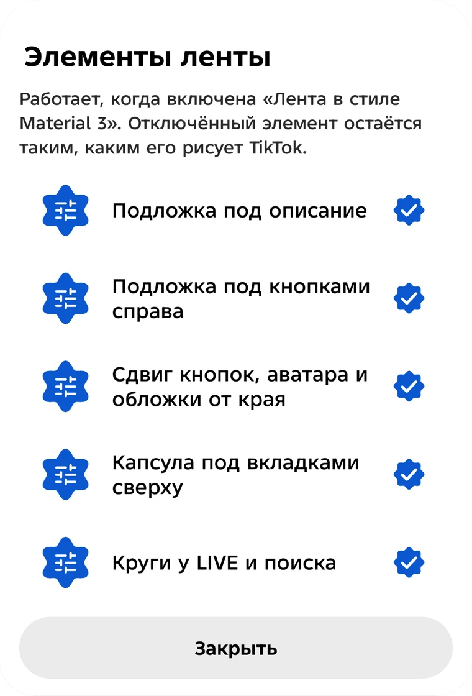

Лента в стиле Material 3
Подложка под описание, колонка кнопок справа, капсула вкладок, круги у LIVE и поиска. Каждый элемент включается по отдельности.
Цвета телефона: палитра берётся из обоев (Android 12+), и TikTok перекрашивается под неё.
